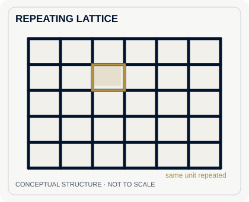
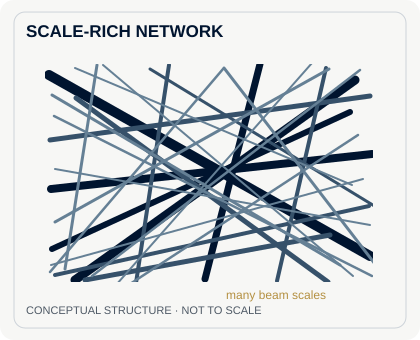

When a grid of identical little squares is crushed, it can collapse in rows. One set of supports buckles, creating a band of compacted cells. The next row may follow. That is one of the failure patterns researchers saw when they compressed and struck conventional lattice metamaterials.
In a new Nature study, researchers from MIT, Northeastern University, and Utrecht University tried a different internal structure. Their 3D-printed samples contain beams of many lengths and thicknesses, arranged in a dense, irregular network. Under compression and impact, damage spread through the network instead of concentrating in a narrow crush band. The team calls these scale-rich metamaterials.
Look at the structures
In a conventional architected metamaterial, the internal pattern is often a single unit cell repeated across the whole sample. A square grid is the clearest example, although engineered honeycombs and other repeating lattices can be much more elaborate.


Original explanatory diagrams based on the structures described by Both and colleagues. They are schematics, not images of experimental samples or exact outputs of the researchers' algorithm.
The researchers generated their networks by adding beams at randomly chosen positions and angles. Each beam extends until it meets another beam or the edge of the material. As the process continues, newly added beams become thinner. Two adjustable parameters govern the starting thickness and how quickly it decreases, giving designers different combinations of stiffness and density.
Both diagrams depict the arrangement of material and empty space, not two different chemical substances. The difference is more specific than simply making a lattice messy. The lengths, widths, and number of connections vary over exceptionally broad ranges. Even a non-repeating Voronoi-cell pattern, which the researchers used as another comparison, does not necessarily have that same spread of scales.
Why the difference shows up under impact
To test the idea, the team printed polymer specimens roughly the size of a credit card, then squeezed them and struck them with a falling weight. For the compression comparison, they used samples with the same nominal relative density—about 42 percent of the volume occupied by solid material. The impact comparisons used about 40 percent. That matters: a chunk with more polymer would not be an especially fair test of the geometry.
The conventional square lattice showed repeated horizontal buckling bands. The hexagonal lattice also developed concentrated zones of crushing. An irregular Voronoi structure distributed damage more effectively, but still developed a compacted region. By contrast, the scale-rich specimens deformed more broadly, without a similarly dominant crush band.
The drop-weight experiments make the distinction particularly vivid. A 6.2-kilogram impactor struck the specimens at roughly 4 meters per second, while a high-speed camera recorded the response. The scale-rich specimens produced a steadier force-over-time profile, with the lowest peak force and highest specific energy dissipation among the reference architectures tested. For something intended to cushion a blow, the peak force is as important as the energy absorbed.
The team also tested whether the design could shelter a fragile object. Inspired by the thick rind of a pomelo, they concentrated more of the network near the outside of a sample, around an embedded acrylic piece. In their simulations, the resulting design reduced stress on that piece by as much as 4.9-fold compared with reference structures under the modeled conditions.
What this does—and does not—establish
The interesting achievement is a controllable material architecture with several useful behaviors at once: resistance to localized collapse, adjustable directional stiffness, and impact absorption. The authors also demonstrated that their networks could guide elastic waves. It is a design method, not a single magic formulation of polymer.
None of this means a commercially ready helmet or better body armor has been demonstrated. These were manufactured laboratory specimens with particular dimensions, densities, and loading conditions. Real protective gear would need additional testing for repeated impacts, long-term wear, manufacturing consistency, fit, and the forces that reach a human body.
The payoff comes from the network's geometry: it changes how the specimen gives way under a load without requiring a different polymer.
MIT has a short comparison video of the printed structures under compression and impact. It is worth watching after studying the two diagrams: the failure patterns are easier to see in motion.
Sources
- Csaba Both and colleagues, Scale-rich network-based metamaterials, Nature, November 11, 2026. Open-access original research, especially Figures 1, 3, and 4.
- Jennifer Chu, MIT News, November 11, 2026, including the researchers' comparison video.
Ulix app
Curious Air
Curious Air is an Android tool for exploring nearby wireless signals and information from the phone's own sensors.